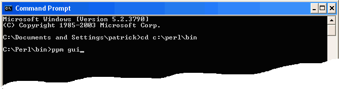
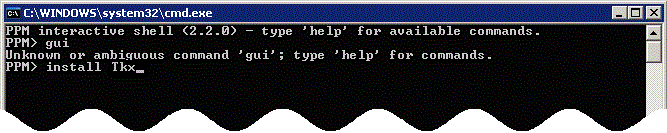
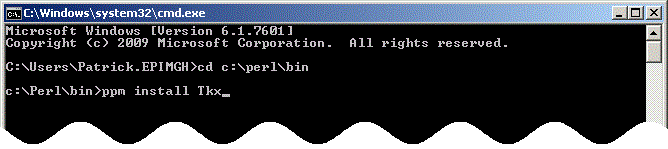
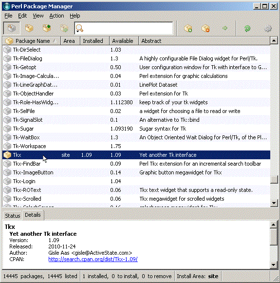
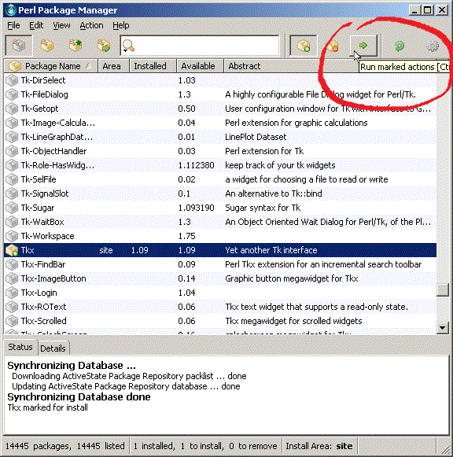

|
Clinician's corner |
|
Back to main page |
|
Programmer's corner |
| So, you use WinBUGS a lot? Want more? |
|
Patrick Blisle Division of Clinical Epidemiology McGill University Health Center Montreal, Quebec CANADA patrick.belisle@rimuhc.ca Last modification: 28 mar 2012
|
|
|
PPM
Installing Tkx with Perl Package Manager (PPM)
Installing a Perl module is easy on most systems through the use of PPM
– Perl Package Manager – which comes with the standard Perl distribution.
First browse to your system's Perl directory (c:\Perl\bin by default) and see if you can find a file called ppm, or maybe ppm.bat. If ppm.bat is present, double-click it and a MS-DOS window will open: if the graphical user interface (GUI) to ppm works on your system, it may also open automatically. Follow the instructions in the GUI section below if it does.
If ppm.bat cannot be found in your system's Perl directory, open an MS-DOS window, change directory to your system's Perl directory and type ppm gui:

If you receive an error message, then simply start ppm by typing ppm at the DOS-prompt. One could still try to start the GUI by typing GUI at the PPM prompt

but chances are you will still receive an error message.
Doesn't matter!! Indeed, you can still install a package by simply typing the install instruction followed by the module name:

Type exit to quit. That's it! You're Perl module is installed!
It may be easier to just type one PPM command at the DOS-prompt, especially if you have just one module to install, e.g. Tkx, as illustrated below.

Installing a Perl module with the PPM Graphical User Interface
If the PPM GUI works on your system, it is also easy to install a module (or a bunch of modules) with a few clicks. To install Tkx Perl module (necessary for WinBUGSLogs2HtmlSummary), scroll down the Package Name list and select Tkx by clicking its name.

Then click the + button in the top-right area of the GUI
and start the module download by clicking the arrow next to the + button

Select the File... Exit... top-left menu item to quit. Congratulations! Tkx is now installed!